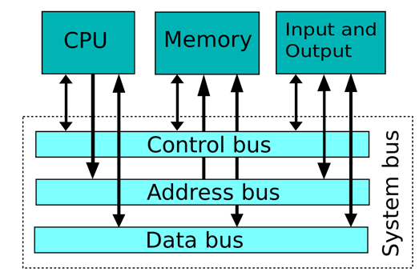
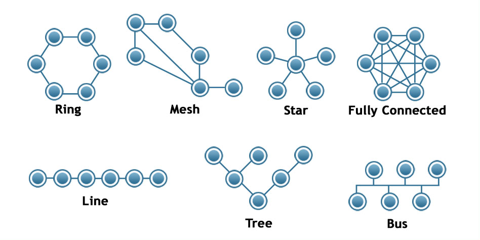
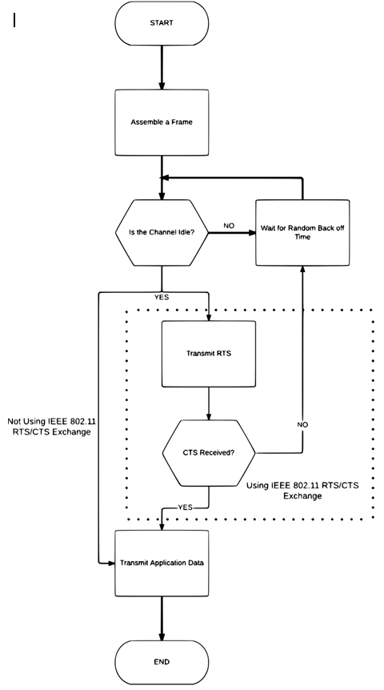
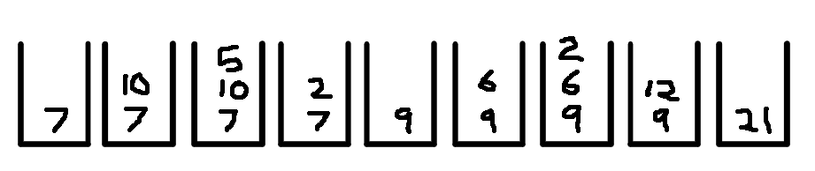
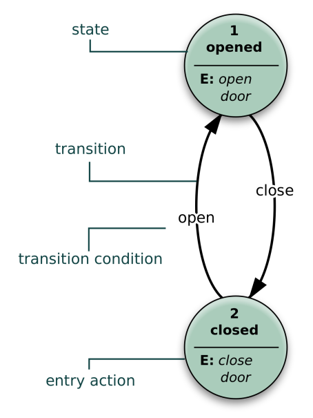
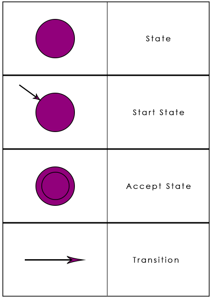
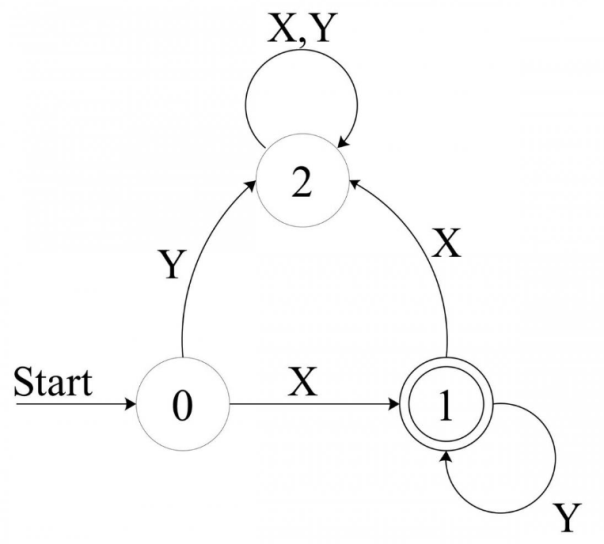
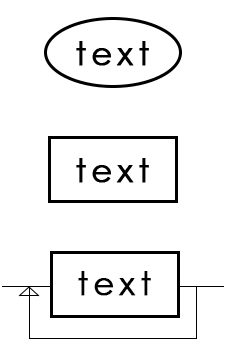
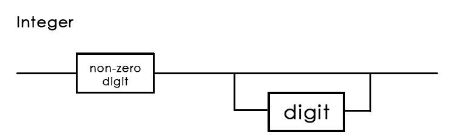

Computing Notes
These are some of the notes for the AQA Computing A-level syllabus. These notes are by no means complete and may have errors and inconsistencies. Please use the contact button at the bottom if you find anything you'd like changed.Classification of Languages
Machine Code
The instructions given directly to the processor at the lowest level must all be 0’s and 1’s. This is machine code. Programs in machine code are very long due to the fact binary is the simplest form of representing data and so many bits of information are needed to simply represent one command. Machine code also creates other difficulties, such as being very hard to debug, while very easy to make mistakes, and also not very transferrable, due to being processor specific.
Assembly Language
Assembly is machine code, where each word in assembly represents a string of binary digits, that represents one command. Assembly to machine code has a one to one relationship. Assembly uses mnemonics such as LDR to represent Load Register, which are easier to remember for programmers.
High-level Language
Writing in assembly is slow. High level languages are problem orientated, and so use single strings to represent many commands, while being portable and so transferable across systems. There are 3 main types of high-level language.
Imperative languages– user types a list of instructions that the computer follows. When the program is run it follows the same set of instructions
Object orientated languages – Work by creating objects where instructions and data are stored in a single object.
Declarative languages – Describe what the program should accomplish instead of how it should accomplish it. Uses a set list of instructions and functions that the computer then uses to achieve its goal.
Main Characteristics of High level languages;
- Easier to identify what a command does as the keywords are more like normal language
- Like assembly, high level languages need to be translated
- Unlike assembly, one command in a high-level language might be represented by a whole sequence of machine code instructions. This is called a one-to-many relationship.
- Portable
Translating High level languages
Interpreter
Reads the statement from the source and immediately performs and action.
+ Don’t need to compile the whole program to run sections of code.
+ As the code is translated each time it is executed, program can be run on processors with different instruction sets
- Overall time can be quite long
- Source code can only be executed on computer with the interpreter installed
- Source code must be distributed to users, whereas with compiled code, only the executable code is needed
Compiler
Converts the whole source code into object code before the program can be executed. Execution time is quick once it has been compiled, so once the bugs have been fixed, compiling is beneficial.
+ Once source code is compiled, compiler no long needed / source code not needed
+ Hard to access source code once compiled
- Can take a long time to debug as program must be compiled before it is tested.
- Object code will only run on a computer that has the same platform.
Bytecode
Bytecode is an instruction set that can be executed using a virtual machine. The VM can emulate the architecture of a computer, meaning the source code written using bytecode can be translated into a format that can be executed on any computer.
Hardware & Software
There are various components, both physical and virtual that come together to form a computer system;
Internal Hardware – graphics cards, storage, CPU, circuitry
External Hardware – peripherals, keyboard, mouse, speakers
Software– programs that make use of the hardware
- Application Software – Programs that the user uses to complete tasks
- System Software – Software that sets up and runs the computer, usually invisible.
Software
Utility software - system software designed to help analyse, configure, optimize or maintain a computer. It is used to support the computer infrastructure in contrast to application software, which is aimed at directly performing tasks that benefit ordinary users.
Library Programs – similar to utility programs, library programs are written to carry out common tasks. Library programs tend to be critical, responsible for the handling of data types, fonts, graphics and performing functions.
Translators – Software that converts programming language instructions into 0’s and 1’s. There are three types;
- Compilers – programs that translate high-level language into machine code
- Assemblers – programs that translate programs written in assembly into machine code
- Interpreter- a program for translating a high-level language by reading each statement in the source code and immediately performing the action.
Operating Systems
- A collection of software designed to act as an interface between the user and the computer, while managing all of the operations of the computer.
- Controls start-up of computer
- Receives user input e.g. mouse click / button press and decides what action to take
- Allocates memory to programs
- Handles errors
- Manages users / user profiles
Resource Management
Resource management is how an operating system manages hardware and software to optimise performance
The computers use scheduling to achieve optimal resource management;
Scheduling – Ensures different programs are able to work on a computer at the same time. This can be achieved using time slicing, which allocates a certain amount of time to each process. This is a crude system as programs might not need their time slice, and so processing time is wasted.
Memory Management
The process by which the operating system uses RAM to optimise performance of the computer.
The operating system controls the way files are stored in secondary storage, however it also controls the main memory, or RAM. The operating system stores all unallocated memory locations in a heap. When a program needs memory it is allocated from the heap.
External Hardware
Solid State Disk
Main memory holds data using semiconductors. As these are entirely electronic and have no mechanical parts, high-speed data transfer can be achieved. But as soon as the power is lost, they lose their data.
This is why hard disks are used as they use magnetic memory, which do not lose data when power is off. But access times for magnetic hard disks are relatively slow as the disk has to spin and an arm has to move across the surface of the disk until the data is found.
A relatively new development is the solid state disk, which made up of semiconductors, but is also non- volatile. SSD’s are comprised of grids of electrical cells, instead of a moving arm and disk. These grids are on pages, which group together to form a block.
SSD’s are able to retain information as they use NAND flash memory, which makes use of floating gate transistors to store an electrical charge when powered down.
Hard Disk Drive
A secondary storage device made up of metallic disks, that store data magnetically.
Immediate Access Store (main memory) is used to store programs and data that are in use, because it is situated on the motherboard, and is closer to the CPU, and because it is solid state rather than magnetic, and so information can be accessed faster.
Main memory is volatile and costly at high capacity, relative to cheap magnetic hard disks.
Secondary storage is used to permanently store data.
How is a HDD made?
- Hard disks are comprised of a stack of disks.
- The disks are coated in a thin film of magnetic material.
- Changes in the direction of magnetism represent 0's and 1's
How information is accessed
- The disks spin at around 10,000 RPM.
- There is a head assembly attached to an actuator arm that moves across the disk as it spins, meaning every part of the disk can be reached.
- Each disk is split into tracks, which are split into sectors.
Hard disks have faster access speeds than optical disks, but slower access speeds compared to solid state disks.
Digital Camera
A device for creating digital images of photographs, which can be printed or transferred onto a computer.
Digital cameras take in analogue data in the form of light waves, and converts it into binary.
- The shutter opens and lets light in through the lens
- The light is focused on a sensor, which is usually a Charge Coupled Device
- The sensors are made up of millions of transistors
- As the light hits the sensor it is converted into electrons, with the amount of charge recorded for each pixel
- The camera has 3 different sensors, red, green and blue, which filter the light.
Charge Coupled Device – Records the amount of light received and converts it into a digital value
The number of mega pixels determines the number of pixels, or individual elements in a picture. A larger mega pixels camera will provide a higher quality image, however it will produce larger file sizes.
Bar code Reader
A device that uses LED’s or lasers to read the black and white lines of a bar code
- A light is passed over an image
- A light sensor is used to measure the intensity of the light being reflected back, which is turned into a current
- White areas reflect most light and black areas the least, making it possible to use the waveform to distinguish the patterns of black and white
- This analogue waveform is transformed into a digital form using an analogue to digital converter.
- The encoding converts black and white to binary, e.g. black = 0 white = 1
RFID
A Radio Frequency Identification is a microscopic device that stores data and transmits it using radio waves.
- A tag contains a chip which contains the data about the item and a modem to modulate and demodulate radio signals
- The tag contains an antennae to send and receive signals
- Tags can be active (have a power source) or passive (pick up EM power when in the range of an RFID reader)
- Signals can be transmitted in both directions using radio frequencies.
RFID’s are used for;
- Tracking individuals, e.g. criminals or vulnerable people.
- Used in electronic passports to keep track of where people travel
- Contactless payment in credit cards
- High value items e.g. in museums
Laser Printer
- A rotating drum inside the printer is given an electrical charge
- A laser beam is reflected onto the drum and where the light hits the drum the charge is discharged, effectively creating the image on the drum.
- As the drum rotates it picks up toner which is attracted to the charged parts of the drum
- Paper is passed over the drum, which is charged oppositely to the toner, making the toner attracted to the paper.
Internal Hardware
A computer system has internal components such as the processor, main memory, buses and controllers.
The Processor
The processor responds to and processes the instructions that drive the computer. It contains the control unit, the arithmetic logic unit and registers.
Control Unit
The control unit makes sure data is being routed correctly (put into the correct register) and controls the Fetch Execute Cycle, which is comprised of 3 stages that repeat continuously:
- FETCH – causes the next instruction to be fetched from main memory
- DECODE – decodes the instruction
- EXECUTE – causes the instruction to be executed
Arithmetic Logic Unit
The Arithmetic Logic Unit performs arithmetic and logical operations on data.
- Arithmetic operations include addition, subtraction, multiplication and division.
- Logical operations include comparing two numbers, to check if is greater, lesser, or equal. Bitwise logical operations (AND, OR, XOR, NAND etc.) can manipulate individual bits.
The Clock
All computers have an internal clock that generates a signal, which is used to synchronise the operation of the computer.
RegistersRegisters are storage locations within the processor that store information from the control unit and the data being processed by the ALU
- Status Register – Keeps track of the status of various parts of the computer.
- Interrupt Register - Stores details of any signals that have been received by the processor from other components attached to it.
There are 4 Registers in the processor;
- Current Instructions Register – Stores the instruction that is currently being executed by the processor
- Program Counter – stores the memory location of the next instruction that will be needed by the processor
- Memory Buffer Register – Holds the data that has just been read from or is about to be written to main memory
- Memory Address Register – stores the memory location where data in the MBR is about to be written to or read from.
Interrupts
A signal sent by a device or program to the processor requesting its attention. For example;
- A printer sends a request for data
- A user clicks a button
- The user terminates a program
The interrupt comes after the FDE part of the cycle. This means that with every loop, there is a check for interrupts. If an interrupt is detected, it is serviced using the Interrupt Service Routine which calls the routine required to handle the interrupt. The values in the processor at the current time, for example in the register, are moved to the system stack, where they can be retrieved once the processor continues.
Buses
A bus is a set of parallel wires connecting two or more components of a computer. The processor is connected to main memory by three separate buses:
- When the CPU wishes to access a particular memory location, it sends this address to memory on the address bus.
- The data in that location is then returned on the data bus.
- Control signals are sent along the control bus.

Control Bus
The purpose of the control bus is to transmit command, timing and specific status information between system components.
The control bus is a bi-directional bus, meaning that signals can be carried in both directions. The data and address buses are shared by all components of the system. Control lines must therefore be provided to ensure that all access to and use of the data and address buses by the different components of the system does not lead to conflict. Control lines include:
- Memory Write – causes data on the data bus to be written into the address location
- Memory Read – causes data from the addressed location to be placed on the data bus
- Interrupt Request – indicates that a device is requesting access to the CPU
- Bus Request – indicates that a device is requesting use of the data bus
- Bus Grant – indicates that the CPU has granted access to the data bus
- Clock – used to synchronise operations
- Reset – initialises all components
Data Bus
The data bus, typically consisting of 8, 16, 32 or 64 separate lines provides a bi-directional path for moving data and instructions between system components. The width of the bus is a key factor in determining overall system performance. For example, if the bus is 8 bits wide and the instruction is 16 bits long, then the CPU must access the main memory twice just to fetch the instruction
Address Bus
Memory is divided up internally into units called words. A word is a fixed size group of digits, typically 8, 16, 32 or 64 bits, which is handled as a unit by the processor, and different types of processor have different word sizes.
Each word in memory has its own specific address.
When the processor wishes to read a word of data from the memory, it first puts the address onto the address bus. The width of the address bus determines that maximum possible memory capacity of the system – e.g. an 8 bit memory bus would have a maximum of 256 slots.
I/O Controllers
An I/O controller is a device which interfaces between an input or output device and the processor. Each device has a seperate controller which connects to the control bus. I/O controllers receive input and output requests from the processor, and then send device specific control signals to the device they control. They also manage the data flow to and from the device.
The controller is a circuit with 3 parts:
- An interface that allows connection of the controller to the system or I/O bus
- A set of data, command and status registers
- An interface that enables connection of the controller to the cable connecting the device to the computer
An interface is a standardised form of connection defining such things as signals, number of connecting pins/sockets and voltage levels that appear at the interface. An example is a USB connection.
Processor Instruction Set and Addressing Modes
At machine code level, programming is carried out by directly manipulating zeros and ones
The next step up is to use assembly, which is code made up of mnemonics.
Instruction Set
The instruction set used varies from processor to processor, depending on the model. These instruction sets are either RISC or CISC architectures.
The definition of an instruction set is the pattern of 0’s and 1’s that a particular processor recognises as commands, and their associated meanings.
Assembly Language Statements
CMP r1, #10 – compares the value stored in register 1 with the value in 10
CMP is the operation code
R1 and #10 are the operands
The operation code (opcode) is displayed as a mnemonic consisting of one to four characters.
There may be a different number of operands following the opcode depending on which opcode is in use; e.g. CMP needs 2 operands, the first identifying the memory address/register that is being accessed, and the second is the data that is to be compared with.
Addressing Modes
In order to access anything that is held in memory, you need to know its address.
The address is a number that tells the computer where in the memory to go to find a specific item of data.
Using a direct address mode tells the CPU which address contains the data you want to access
E.g. LDR r1, 100 would copy the data in memory location 100 to register 1.
Immediate addressing loads the data directly.
Therefore the operand would have to be the actual number that you wish to use.
A command such as MOV r1, #10 would move the value 10 into register 1.
Types of Opcode
The operation codes of an assembly language can be placed in one of four groups
Data transfer – MOV, STR, LDR
Arithmetic operations – ADD, SUB, multiply, divide, shift
Logical operations – Bitwise operations e.g. AND, OR, NOT, XOR
Branch operations – Include conditionals e.g. BNE, BEG
The best HTML CheatSheet has its own visual editor where you can apply your own CSS code as well. Web developers and designers love this free online resource!
Databases & Management
Relational Databases
Relational databases are a method of creating a database using tables of related data, with relationships between the tables.
Databases are comprised of tables, e.g;
CUSTOMER – contains names, addresses, phone numbers
MOVIE – genre, length, title
DOWNLOAD – When the film was downloaded, payment method/info etc
Entity – an object about which data is stored
Attribute – a characteristic of an entity which would be stored in a relational database
Relationships;
One to many – one customer will have many downloads
Many to many – many customers will have many downloads
One to one – one film could only have one download
Primary Key and Identifiers
Primary Key – an attribute that can be used to uniquely identify every record within a table
Entity Identifier – an attribute which can uniquely identify each instance of an entity. Entity identifiers can be made in various ways..
- A unique attribute; e.g. National insurance number
- Create a unique attribute; e.g. ID = 2394234
- Use a composite key; e.g. Two or more attributes used in combination, name and address together make a unique ID
Foreign Key – an attribute in a table that is a primary key in another table and is used to link tables together. Appears in more than one table; used to create a link between tables

Normalisation
Normalisation provides rules that help:
- organise the data efficiently.
- eliminate redundant data.
- ensure that only related data are stored in a table.
> 1st Normal Form
A database is considered to be in 1st normal form when the following conditions are met;
- There are no columns with repeated or similar data
- Each data item cannot be broken down any further.
- Each row is unique i.e. it has a primary key
- Each field has a unique name
>2nd Normal Form
- The table must already be in 1st normal form
- Non-key attributes must depend on every part of the primary key
So inherently, any table that is already in 1NF and has a simple primary key is automatically in second normal form as well.
>3rd Normal Form
- Database must already be in 2nd normal form
- There are no non-key attributes that depend on another non-key attribute
What this is trying to do is to spot yet another source of redundant data. If the value of an attribute can be obtained by simply making use of another attribute in the table, then it does not need to be there. Loading that attribute into another table and linking to it will make the database smaller.

Moral, Ethical & Legal Issues
A moral issue is one that concerns our own individual behaviour and our own personal concepts of right and wrong
Ethics vary slightly from morals in that they are a way of trying to define a set of moral values or principles that people within society live by.
Ethical issues are sometimes referred to, therefore, as social issues.
Examples of moral and ethical issues.
- Misuse of data
- Unauthorised access
- Unauthorised use of software
- Inappropriate behaviour
- Inappropriate content
- Freedom of speech
- Unemployment
- Availability of access to the Internet.
Legal issues relate to those issues where a law has been passed by the government
There are very few acts of parliament that are specific to the world of computing
The Data Protection Act
There are eight main principles behind this act. Anyone processing personal data must comply with the eight principles of good practice;
Data must be;
- Fairly and lawfully processed
- Processed for limited purposes
- Adequate, relevant and not excessive
- Accurate
- Not kept longer than necessary
- Processed in accordance with the data subject’s rights
- Secure
- Not transferred to countries without adequate data protection
The Computer Misuse Act
The computer misuse act was introduced primarily to prevent hacking and contains three specific offences relating to computer usage.
- Unauthorised access to computer programs or data. This includes some forms of hacking, including breaking through password protection and firewalls, decrypting files and stealing another user’s identity.
- Unauthorised access with further criminal intent. An extension of the first offence where there is a clear intention to carry out a further criminal act such as an act of fraud or a copyright breach.
- Unauthorised modification of computer material. This includes falsifying bank details or exam grades, spreading viruses intended to corrupt data and programs and interfering with a system file.
There are 3 more that are of relevance to computing:
>The Freedom of Information Act
Gives general rights of access to information held by public authorities such as hospitals, doctors, dentists, the police, schools and colleges.
The act gives individuals access to both personal and non-personal data held by public authorities
>The Regulation of Investigatory Powers Act
This act was introduced to clarify the powers that government agencies have when investigating crime or suspected crime
- Interception of communications
- The investigation of electronic data protected by encryption
>The Copyright, Designs and Patents Act.
gives the creators of literary, dramatic, musical and artistic works the right to control the ways in which their material may be used. The rights cover: Broadcast and public performance, copying, adapting, issuing, renting and lending copies to the public. In many cases, the creator will also have the right to be identified as the author and to object to distortions of his work.
Communication Basics
Serial Transmission
– Data is transmitted one single bit down a single wire
- In serial transmission, bits are sent sequentially on the same channel (wire) which reduces costs for wire but also slows the speed of transmission. Also, for serial transmission, some overhead time is needed since bits must be assembled and sent as a unit and then disassembled at the receiver.
> Synchronous Data Transmission
- Synchronous means ‘occurring at the same time’ or ‘having the same speed’
- In the context of data transmission, this means two devices communicating will synchronise their transmission signals
- If the two system clocks are not synchronised then data can be lost during transmission
> Asynchronous Data Transmission
- Asynchronous translation does not require the permanent synchronisation of the sender’s and receiver’s system clocks. 1
- Instead, it synchronises only for the duration of the transmission by sending additional bits of information called start and stop bits.
Parallel Transmission
– Data is transmitted several bits at a time using multiple wires
- In parallel transmission, multiple bits (usually 8 bits or a byte/character) are sent simultaneously on different channels (wires, frequency channels) within the same cable, or radio path, and synchronized to a clock. Parallel devices have a wider data bus than serial devices and can therefore transfer data in words of one or more bytes at a time. As a result, there is a speedup in parallel transmission bit rate over serial transmission bit rate. However, this speedup is a tradeoff versus cost since multiple wires cost more than a single wire, and as a parallel cable gets longer, the synchronization timing between multiple channels becomes more sensitive to distance.
Factors affecting speed of data transmission over the Internet
Latency
- Propagation latency: The amount of time it takes for a logic gate within a circuit to transmit the data.
- Transmission Latency: The mount of time it takes to pass through a particular communication medium, for example, fibre optic would have a lower latency than copper cable.
- Processing Latency: The amount of time it takes data to pass around a network depending on how many servers or devices it has to pass through.
Bandwidth
In computer networks, bandwidth is used as a synonym for data transfer rate, the amount of data that can be carried from one point to another in a given time period (usually a second).
Jitter
Jitter is any deviation in, or displacement of, the signal pulses in a high-frequency digital signal. The deviation can be in terms of amplitude, phase timing or the width of the signal pulse. Among the causes of jitter are electromagnetic interference (EMI) and crosstalk with other signals.
Bit Rate
Bit rate is used to describe the speed at which a particular transmission is taking place. It is linked to bandwidth because the bit rate is limited by how much bandwidth is available. Bit rate represents the actual speed of data transfer
Parity
Before data is transmitted, parity is agreed; the number of 1’s will either be even or odd (its usually even)
This means, when 8 bits of data are transferred, only the first 7 are used for data, and the last bit is used as a parity bit.
Networks
In order to connect to a network, a computer must have a network adapter, more commonly known as a network interface card (NIC)
This NIC is a printed circuit board contained inside the computer like any other card.
The NIC is designed to allow the computer to connect to the Internet either via cable or wirelessly to the particular network topology being used.
The card is also responsible for the speed of data transmission between the device and the network
Definition of a network
Networks usually describes the geographical area it covers and the way in which the connection is configured, known as the network topology.
Local Area Network
A number of computers and peripherals connected over a small geographical distance, covering one building or site.
Wide Area Network
A number of computers connected together over a large site, over an area of 1km radius or larger.
What is a Router?
A router is a networking device that connects computer networks, for example, connecting a home network with the Internet.
- Recieves every packet of data being transmitted, reads the header of the packet and then forwards it to its destination
- Acts as a firewall preventing certain packets from being forwarded.
- Acts as a switch creating a connection between two devices on a network
- Provides a wireless access point transmitting a wifi signal
- Acts as a modem to convert digital signals to analogue so that they can be transmitted down standard telephone cables.
What is a Switch?
A network switch connects devices together on a single computer network
- Switches allow different nodes of a network to communicate directly with one another
- When a switch receives a packet of data, it determines what computer or device the packet is intended for and sends it to that computer only. It does not broadcast the packet to all computers like a hub. This makes it more efficient.
Peer-To-Peer Networks
- No one is in control of the network
- Resources are instead available to all the computers in a network
Wireless Networks
- Does not use cables to make connections
- Uses data sent as radio waves
- Can create large area networks (WWAN’s)
- All devices on a network are assigned a MAC address
- Unique identifier encoded into the network interface card
Network Security
- Change SSID from default value
- Ensure all devices are WiFi protected (WPA/2) Compliant
- Use strong encryption e.g. WPA2
- Create a white list of MAC addresses that are trustworthy
Service Set Identifier / SSID
One issue when using wireless networks is ensuring that the devices are connecting to the correct WLAN.
As all of the data is being sent through radio waves rather than cables, each device needs a way to ensure it is connecting to the correct network
The standard identifier is using an SSID which is a 32-character code put on the header of each packet
CSMA/CA
- Enable various devices to transmit data at high speeds
- Data is sent using frames, and the frames are reassembled at the receiving end
- Any device on a wireless network can send frames, and the device uses a CSMA protocol to ensure the transmission medium is idle
- If the transmission medium is idle, the frame is sent
Topologies
Star Topology
There is a dedicated connection between the server and the client
Advantages
- Fast connection speed, as each client has a dedicated cable
- It will not slow down as much as other network types when many users are online
- Fault finding is simpler, as individual faults are easier to trace
- It is relatively secure, as the connection from client to server is unique
- New clients can be added without affecting other clients
Disadvantages
- Expensive to start up because of cable costs
- Difficult to install, as multiple cables are needed. The problem is made worse when the LAN is across multiple buildings.
- The switch/server can get congested as all communications must pass through it
- High skill requirement to set-up and manage network
Bus Topology
A bus topology is a series of clients connected via a main cable.
- All of the nodes within the network are connected via one main cable
- If there is a main server, all of the clients connect to it via this main cable
- The cable carries data between the server and the clients, with each client branching off the main bus cable.
- The main cable must allow high speed data transmission as all the data must pass down this one channel.
Advantages
- Cheaper to install than star because there is only one cable
- It is easier to install
- It is easy to add new clients by branching them off the main cable
- It is less secure than a star network as all data is transmitted down one main cable
- Transmission gets slower when lots of users are on the network
- If the main cable fails, then all of the clients are affected
- It is less reliable than a star network due to reliance on the main cable
- It is more difficult to find faults
Disadvantages
- It is less secure than a star network as all data is transmitted down one main cable
- Transmission gets slower when lots of users are on the network
- If the main cable fails, then all of the clients are affected
- It is less reliable than a star network due to reliance on the main cable
- It is more difficult to find faults
The Internet & Internet Security
The Internet
- The Internet is a network of networks.
- It is a global interconnection of computers and networks.
- The Internet started as ARPNET in the late 1960’s.
- The Internet as we know it started to take shape in the 80’s when Tim Berners-Lee created the World Wide Web
IP Addresses
An IP is a dotted quad number that identifies every computer that sends and receives data on a network. This was originally a 32 bit code separated by dots.
The router replaces the internal IP address and port number in the packet with its external IP address and a port number that it generates
The router stores the mapping information from the internal IP address and port number to external port number in the translation table.
Universal Resource Locator (URL)
The type of file that a URL locates will very depending on the Internet protocol being used. In this example, HTTP is being used. The file it points to is a HTML called index.html, which contains hyperlinks to further pages.
HTTP indicates that the file can be accessed using a browser.
Connecting to the Internet
> The computer on the internal network sends a packet to the server on the Internet to request some data, including its own internal IP address and port number in the packet so the server knows where to return the data to.
> The router replaces the internal IP address and port number in the packet with its external IP address and a port number that it generates.
> The router stores the mapping information from internal IP address and port number to external port number in the translation table.
> Data sent back from the server will be received by the router which will look up the port number in the translation table.
> The router’s IP address in the packet will be replaced with the originating workstation’s IP address and port number, as read from the translation table.
> The reply packet can then be sent to the originating workstation.
> The internal IP address and port are never public on the external network.
Ports and port forwarding
A port is used to identify a particular process or application on a network. The port address is a 16-bit number.
By addressing that port, the client can access a process of application. Port addresses are often used to run processes for common networking tasks.
Well-known ports
Port 25 for SMTP applications that check for incoming mail
Port 110 is used for the POP3 application that fetches mail
Sockets
A network socket is an endpoint of a communication flow across a computer network
Sockets are created in software, not hardware.
A TCP/IP socket is made up from a combination of an IP address and port number.
When a computer needs to communicate with a server it will send a request to the server using the server’s IP address and port number.
Subnet Masking
- A subnet (short for "subnetwork") is an identifiably separate part of an organization's network.
- When transmitting data, the sender needs to identify whether the receiver is on the same subnet
- If it is, it can send data to it directly.
To identify whether the destination computer is on the same subnet, the sending computer needs to look at the network portion of the destination IP address to see if it is the same as its own.
It uses a subnet mask to identify this portion of the address.
e.g. 120.176.134.32 – 32 is the host ID and the remaining portion is the network ID.
The reason addresses are split up in this way is to make networks easier to manage and to make it more efficient when routing data.
DHCP (Dynamic Host Configuration Protocol)
- IP addresses are either static or dynamic
- Static IP addresses never change once allocated
Dynamic IP addresses are allocated every time a device connects to a network and this is perhaps the most common approach
Routing and gateways
In any communication there must be a sender and a receiver and a connection must be established between the two.
There are a number of ways in which this connection can be made
When you connect to the Internet, a connection is established between your computer and the website that you are visiting. This is not a direct link.
In the first instance, you connect to your Internet service provider, which in turn connects to the ISP hosting the web site.
Routing send data packets between nodes.
Gateways send packets between networks.
Routing finds the optimum route between sender and receiver, which may be made up of many nodes.
At each stage of the routing process, the data packets are sent to the next router in the path, often with reference to a routing table.
The routing table stores information on possible routes that each data packet may take between nodes on its path from sender to receiver.
Routing algorithms are used to identify the next best step.
Packet Switching
One of the methods used to send data across networks is called packet switching. Data sent over the Internet is broken down into packets.
Each packet of data will also contain additional information including a packet sequence number, a source and destination address and a checksum.
The packets are sent to their destination using the destination address
They are re-assembled at the other end using the packet sequence number.
Internet Security
Firewall
A technique used to protect and organization’s network from unauthorized access by users outside the network.
Can be created with hardware or software or both
Firewalls use packet filtering to identify whether packets contain any unauthorized data.
At a more sophisticated level, instead of just inspecting the header for IP addresses, stateful inspection can be used. Stateful inspection look at where packets have come from and checks if the packets are part of a recognized data stream
Proxy Server
The word proxy means ‘on behalf of’ so in this context it is a server that acts on behalf of another computer.
By routing through a proxy server there is no direct connection between the computer on the LAN and the Internet.
Encryption
Private / Public key encryption
Encryption techniques make use of a key, which is a string of numbers or characters that are used as a code to encrypt and then decrypt the message.
Typically, the key may be 128-bit or 256-bit, enabling billions of permutations for the way in which data can be encrypted.
Without the key, the message cannot be understood.
Symmetric Key Encryption
Symmetric key encryption uses a key to encrypt and then decrypt the data.
They key must be known to sender and receiver.
Asymmetric Key Encryption
Assuming two computers, A and B;
A will have a private key only know to A
A will also have a public key, which is mathematically related to the private key. It is called a public key as anyone can access it.
B will also have a private and public key. For A to send a secure message to B, A will first encrypt the message using B’s public key.
Asymmetric key encryption uses a public and private key.
Digital Certificates and signatures
A digital certificate is a means of proving who you are when dealing with people and organisations on the Internet.
It is usually used by businesses to authenticate that they are genuine, and is important in the use of asymmetric encryption as a secure way of sharing public keys.
Digital certificates, sometimes referred to as SSL is another method of ensuring the authenticity of the sender.
A digital signatures uses mathematical functions and the public private key method.
Majority Voting
Majority voting is a method of identifying errors in transmitted data. The data is sent 3 times, e.g. 101 would be sent as 111000111. If the first 3 bits were 110 for example, we would know there has been an error, and the system would find which digit has the highest frequency and use that, so in this example it would use 1, because there are two 1’s and one 0, so 1 wins and we avoid the distortion.
Check Digits
Check digits are a common way of checking data when it is being entered into a computer. Like a parity bit, a check digit is a value that is added to the end of a number to try to ensure that the number is not corrupted in any way. The check digit is created by taking the digits that make up the number itself and using them in some way to create a single digit. The simplest is to add the digits of the number together and keep on adding the digits until you have only a single digit remaining. E.g. The digits in 123456 add up to 21. 2 and 1 add up to give 3. Then we append 3 to the end of the string – 1234563
Transmission Protocols (TCP/IP)
The TCP/IP stack defines the rules relating to transmission of data packets.
IP controls the delivery of the packets
TCP keeps track of the packets and reassembles them on receipt
TCP/IP is made up of a number of layers, which are collectively referred to as a protocol stack
|
Application layer Handles DNS and some other protocols – FTP, HTTP/S, SMTP, SSH Incoming and outgoing data are converted from one presentation format to another Data that is encrypted or compressed can be interpreted |
|
Transport layer Contains most of the configuration and coordination associated with transmission Ensures all packets have arrived and there are no errors in the packets Identifies and authenticates sender and receiver and sets up the communication. Network resources are identified to ensure that they are sufficient for the communication to take place |
|
Internet layer Defines the IP address of devices that send and receive data. It handles the creation and routing of packets being sent and received |
|
Link layer Synchronise devices so that the flow of data can be managed It identifies what network topology is being used Controls the physical signals that transmit the strings of bits around the network, that is, the actual transmission of the 0’s and 1’s. Controls the physical characteristics such as data transmission rates, and the physical connections in a network. On wireless networks it handles the CSMA/CA protocol |
HTTP
A set of rules that govern how multimedia files are transmitted around the Internet.
HTTP ensures that files are transferred and received in a common format.
HTTP handles the transmission of data.
HTTPS is an extension of HTTP
Hyper Text Transfer Protocol Secure (HTTPS) is the secure version of HTTP, the protocol over which data is sent between your browser and the website that you are connected to. The 'S' at the end of HTTPS stands for 'Secure'. It means all communications between your browser and the website are encrypted. HTTPS is often used to protect highly confidential online transactions like online banking and online shopping order forms.
FTP
FTP is another set of rules relating to the transfer of files around the Internet.
It is commonly used when a web page is uploaded from the computer of the person who created the site to the web hosting server.
FTP is also used when software is downloaded from websites
When FTP is being used for this purpose it will be show as the prefix in the url.
Secure Shell Protocol (SSH)
The Internet is often used to enable a user to connect to a remote computer and execute programs and access resources on that computer.
SMTP
A protocol used for sending and receiving emails.
SMTP is a specific protocol for sending emails and works through a series of SMTP servers which store the email addresses of senders and recipients.
By linking with DNS servers, the IP address of the recipient is identified and a connection can be established between sender and receiver.
The data in the email can then be transmitted.
SMTP uses Port 25 and Port 587.
CSMA/CA
The Carrier Sense Multiple Access/Collision Avoidance protocol is for carrier transmission in wireless local area networks.
The protocol attempts to avoid collisions occurring on a data channel, but due to the hidden nodes problem, it cannot always do so. It must rely on acknowledgements that data has arrived correctly.
Prior to transmitting, a node first listens for signals on the wireless network to determine whether another node is transmitting. If a signal is detected, it waits for a random period of time for the node to stop transmitting and then listens again.
In summary, CSMA/CA works like this;
- Create a packet
- Listen for signals on the network
- If the network is busy, wait a random amount of time and try again
- Otherwise, send the packet.
It is important to note that collisions are still possible with this system, if two nodes both detect an empty signal at the same time, and so they both send at the same time. To avoid this and the problem of 'hidden nodes', we use RTS/CTS.
CSMA/CD with RTS/CTS
RTS/CTS (Request to send / Clear to send) is a process by which the WAP can communicate with the nodes to prevent collisions. If a node wants to send data, it sends a Request To Send signal. The WAP will process this signal, wait until the line is free, and then return a Clear To Send signal.
This can counteract collisions but also solves the problem of hidden nodes. Hidden nodes can be heard by the WAP but not by other nodes on the network. These are used for example in public access points to stop devices being able to view data about other devices.

The Client-Server Model
The client server model works on the basic principle of sender and receiver.
To initiate any communication and sharing of resources, the client must take a request to the server
In turn the server responds to that request and then provides the service that is being requested.
Application Processing Interface (API)
An API defines the way in which programs work together.
They are usually made up of standardised subroutines that can be customised to prove an interface between one program and another.
When using web services, an API can also define the protocols that will be used.
One of these is the websocket protocol, which creates a connection between a client and a server.
CRUD
>> Many users can access database through a network or over the internet
>> In these situations, there are conventions andstyles that are used to ensure that data is stored, managed and respresented corrently in the database.
The four main processes required with databases can be definedby the acronym CRUD
CREATE
RETRIEVE
UPDATE
DELETE
All databases will conform to the CRUD principle regardless of how they are buil
CRUD & SQL
The CRUD principle applies to relational databases and there is a direct link between CRUD and SQL as follows:
|
CRUD |
SQL |
|
Create |
INSERT |
|
Retrieve |
SELECT |
|
Update |
UPDATE |
|
Delete |
DELETE |
CRUD & REST
REST stands for Representational State Transfer
It is a deisng methodology for networked databsae applications
It uses the HTTP to carry out each of the four CRUD operations on a networked database.
|
CRUD |
HTTP |
|
Create |
POST |
|
Retrieve |
GET |
|
Update |
PUT |
|
Delete |
DELETE |
REST Implementation On a Database
- The client makes a request to the server from the browser of the local machine.
- The service requested is the database identified by its URL, which uniquely identifies the resource on the server and contains the database query
- The API is run from the server and accesseed by the browser to coordinate processes between client and server applications
- HTML fiels are used to ensure data is displayed in the correct format on the client side.
- Requests and data are transferred using HTTP.
- JSON or XML are used to return the results of the query
What is JSON?
JSON is a method for formatting data objects that are transformed across servers and web applciations
What is XML?
XML is an alternative method of formatting data objects that are being transferred across servers and web applications
|
JSON |
XML |
|
|
Human readable |
Very easy to read as it is based on defining objects and values |
Less easy to read as data is contained within markup tags |
|
Compact code |
Less code |
More code |
|
Speed of parsing |
Quicker than XML because data is defined as object and value |
Slower than JSON as the data has to be extrected from the tags |
|
Ease of creation |
Easier to create because syntax is easier |
Similar to programming so therefore more knowledge is required |
|
Flexibility and extendibility |
Works with a limited range of data types |
Provides complete freedom over what data types and therefore allows greater flexibility |
Thick vs Thin Computing
A thin client is a computer that depends heavily on a more powerful server to fulfil most of its requirements and processing
A thick client is a full specified computer like the ones most people have at home; they do not need servers to carry out their processing most of the time.
The decision on whether to configure a
network using a thin or thick client model depends largely on what tasks users are completing and what resources they need
|
Advantages of thin computing |
Disadvantages |
|
Easy and cheap to set up new clients |
Clients are dependent on the network and if the network goes down all of the clients are affected |
|
The server can be confiured to distribute all the hardware and software |
Can slow down with heavy use. |
|
Hardware and software only need to be implemented on the server |
May require greater bandwidth to cope with clients request |
|
Easier for the network manager to control clients |
High-specification servers are expensive. |
|
Greater security as clients have fewer access rights |
Big Data
Big data is a term for data sets that are so large or complex that traditional data processing applications are inadequate to deal with them.
Challenges include;
- Storage
- Transfer
- Visualisation
- Querying
- Updating
- Analysis
- Capture
- Data curation
- Search
- Sharing
- Information privacy
Defining Big Data
Big data usually includes data sets with sizes beyond the ability of commonly used software tools
Volume
The quantity of generated and stored data. The size of the data determines the value and potential insight- and whether it can actually be considered big data or not.
Variety
The type and nature of the data. This helps people who analyse it to effectively use the resulting insight.
Velocity
In this context, the speed at which the data is generated and processed to meet the demands and challenges that lie in the path of growth and development.
Variability
Inconsistency of the data set can hamper processes to handle and manage it.
Applications of Big Data
>Government
Governments have massive datasets, for example NHS records every single patient, appointment and operation.
>Security
Mobile phone calls, texts and emails can all be recorded, creating billions of entities per day that can be used by security to spot terrorist threats etc.
>Retail
All large businesses make use of data, especially online retailers. Businesses use data such as spending habits and response to discounts / ads to increase sales and maximise profit.
>Banking
Banks have to deal with billions of transactions annually, and have to store this information to keep a trail of transactions, which can be analysed to spot fraud and money laundering
>Real-time Applications
Weather and traffic apps etc. make use of real time data from sensors all over the world.
Structured & Unstructured Data
Structured data fits into standard database structure of columns and rows (fields and records)
Unstructured data are data that do not fit into a standard database structure of columns and rows – e.g. multimedia data, web pages and the contents of emails, presentations etc. Although this data does have its own structure, it does not fit into conventional database structures.
Machine Learning
Quantitative data is easy to analyse – a user can query a database and receive information e.g. number of items sold in a week.
Qualitative data is much harder to analyse – e.g. millions of feedback responses would take a long time to read. Therefore techniques known as machine learning are used to automate the process.
Machine learning could simply be a program looking for positive or negative words in a response.
Solving Problems with Big Data – Distributed Processing
Large datasets are a problem that can be overcome through distributed computing , which is the principle that spreading large and complex tasks over a number of computers or servers
When distributed computing is used, a distributed program is also required to handle the processing.
Distributed programs are based on functional programming
Using variables in object-oriented or imperative languages can have side effects. This is because the value of the variable is always changing throughout the code, and the programmer must know the value of the variable at any point in order to code the subsequent lines.
Functional programming uses functions to create a program, instead of variables. This means, the user always gets the original value of the variable to put into their functions, and the output is then local to their machine.
This type of coding is particularly suited to analysing big data, as there will be multiple computers accessing the data at the same time from different computers. This is known as concurrence, and can cause data locking etc.
Data Structures & Abstract Data
A data structure is any method used to store data in an organised and accessible format. Programs can then take this information held in the structure and manipulate it. Different structures are used in different situations – e.g. a stack may be used for handling exceptions
An abstract type is a conceptual model of how the data are stored and the operations that can be performed upon them. The data structure is an implementation of this in a particular programming language.
Arrays
An array is a list or table of data that has a variable name identifying the list or table. Each item in the array is called an element.
An array can be multi-dimensional, but most are 1 dimensional (a list) or 2 dimensional (a table). As arrays become increasingly multi-dimensional, it becomes increasingly difficult to conceptualise and increasingly difficult to memories which element refers to which attribute.
E.g. Results(4,1,5,9) might refer to the 9th question on the 5th paper taken in Subject 1 by Student 4.
Static and Dynamic Structures
Arrays can be broadly separated into two categories – dynamic and static. This reflects the fact that sometimes a programmer will know the size of a structure before it is created, and sometimes the size will be unknown until runtime. Different data structures can be implemented either dynamically or statically – e.g. Queues and Stacks
Queue – A data structure where the first item added is the first item removed.
Stack – A data structure where the last item added is the first item removed.
Static Data Structure – A method of storing data where the amount of data stored if fixed
Dynamic Data Structure – A method of storing data where the amount of data stored will vary as the program is run
Stacks & Queues
Stacks and Queues are abstract data types that hold a collection of elements ready to be processed.
Stacks
How Stacks Work
A stack is an example of a last in first out structure that means that the last item of data added is the first to be removed. However, it is not the data in the stack that is removed – what happens is a variable called the stack pointer keeps track of where the top of the stack is.
Stack Operations
Push – Add a new item to a stack
Pop – Remove an item from a stack
Peek – Return the top item from a stack but don’t remove it
isEmpty() – Tests to see whether the stack is empty – returns a Boolean
isFull() Tests to see whether the stack is full – returns a Boolean
Below is a diagram showing a static stack
|
|
|
>Alan |
|
Bert |
|
Charley |
The stack pointer is at the top. If an item was popped from the stack, the stack pointer would move to Bert.
If 2 more items were added to the stack, the second item would have no where to go an a stack overflow error would occur. Similarly, if the stack was empty and the CPU tried to pop an item, a stack underflow error would occur.
Implementing a Stack
The following is pseudo code that uses StackArray to represent a stack, and StackPointer to represent how far up or down the stack pointer should be.
Pushing onto a stack
If StackPointer < StackMaximum Then
StackPointer += 1
StackArray(StackPointer) = DataItem
Else
Error “Stack Full”
End if
Popping from a stack
If StackPointer > 0 Then
DataItem = StackArray(StackPointer)
‘Decrease stack pointer
StackPointer -= 1
Else
Error “Stack Empty”
End if
Uses of Stacks
Stacks can be used anywhere where the there is a requirement for the last data item in to be the first one out.
For example, an application to reverse the contents of a list.
Call Stack
Call Stack – a special type of stack used to store information about active subroutines and function within a program.
Stack Frame – a collection of data about a subroutine call.
A major use of the stack data structure is to store information about active subroutines while a program is running. The details of the call stack are hidden in high-level languages.
Holding Return Address
When a function is called, the call stack keeps track of the address of the instruction that control should return to when a subroutine ends (this is called the return address). If subroutines are nested, the call stack may contain several return addresses that are popped off the stack in sequence, once each subroutine is complete.
Holding Parameters
Parameters required for a subroutine are held on the call stack. Each call to a subroutine will be given separate space on the call stack for these values.
Local Variables
A subroutine frequently uses local variables which are known only within the subroutine. These may also be held in the call stack. Each separate call to a subroutine gets its own space for a its local variables. Storing local variables on the call stack is much more efficient that using dynamic memory allocation which uses up heap space.
|
Local variables for this routine |
|
Return address |
|
Parameters for this routine |
|
Local variables for this routine |
|
Return address |
|
Parameters for this routine |
|
Local variables for this routine |
|
Return address |
|
Parameters for this routine |
The Stack Frame
A call stack is composed of stack frames. Each stack frame corresponds to a call to a subroutine or function which has not yet terminated.
Queues
How Queues Work
A queue works using a first in first out principle – data leaves in the order it arrives like in a bus queue. Queues are commonly used with peripherals, when the CPU is receiving multiple signals at once, it prioritises them with a queue.
Linear, Circular and Priority Queues
A bus queue would be an example of a linear queue. A circular queue can be envisaged as a fixed size ring where the back of the queue is connected to the front. This means that when the queue is full, the front pointer and rear pointer will be next to each other in the array.
A priority queue adds another element to a linear or circular queue – each item in the queue has a priority, effectively allowing it to jump to a certain position in the queue depending on its priority ranking
Queue Operations
AddToQueue() – Add an item to the rear of the queue
RemoveQueue() – Remove the front item from the queue and return it
isEmpty() – Test to see whether the queue is empty
isFull() – Test to see whether the queue is full
Implementing a Linear Queue
There are two ways to implement a linear queue in an array or list:
- 1) As items leave the queue, all of the other items move up one space so that the front of the queue is always the first element of the structure. This requires significant processing time when processing long queues.
- 2) The queue is implemented with pointers to the front and rear of the queue. An integer holding the size of the array is needed, as well as a variable giving the number of items currently in the queue. A problem arises when items are removed from the front, which causes the front pointer to move further and further along the queue, until the front pointer is pointing near the end of the queue, and no more items can be added, despite the fact there is a lot of empty spaces to the front of the array.
Implementing a Circular Queue
On way of overcoming the limitations of linear queues is to use a circular queue instead, so that when the array fills up and the rear pointer points to the last element of the array, it will be made to point to the first element, when the next person joins the queue (assuming this element is empty)
Pseudocode for a Circular Queue
This code requires an array called Queue(), with a variable called MaxSize that determines the the maximum size of the array. The subs isFull and isEmpty are also needed when adding and removing from the queue. The variable size is needed to store the number of items in the queue, so that size can be compared to maxSize to see in the queue is full.
Sub AddToQueue(NewItem)
If isFull Then
Error “Queue Full”
Else
RearPointer = RearPointer + 1 MOD MaxSize
Queue(RearPointer) = NewItem
Size = Size + 1
End If
End Sub
Graphs & Trees
Graphs and Trees are ways of representing data in computers.
Graphs
A graph is a set of vertices or nodes connected by edges. The edges may be one-way or two-way. In an undirected graph, all edges are bidirectional. If the edges in a graph are all one-way, the graph is said to be directed.

The edges may be weighted, as in the graph above, to show there is a cost to go from one vertex to another. The weights could represent distances between towns, for example.
Implementing a Graph
Two possible implementations of a graph are the adjacency matrix and the adjacency list.
>The Adjacency Matrix
A two-dimensional array can be used to store information about a directed or undirected graph. Each of the rows and columns represents a node, and a value stored in the cell at the intersection of row X and column Y indicates there is an edge connecting node X to node Y.
|
|
A |
B |
C |
|
A |
|
5 |
7 |
|
B |
|
|
2 |
|
C |
|
|
|
The table above represents a graph with 3 nodes in which A is connected to B and C by paths weighted 5 and 7, and B is connected to C by an edge with a weight of 2.
Advantages and Disadvantages of an Adjacency Matrix
An adjacency matrix is convenient to work with, and adding an edge or testing for the presences of an edge is very simple. However, a sparse graph with many nodes but not many edges will leave most of the cells empty, and the larger graph, the more memory is wasted. Furthermore, when using a static two-dimensional array, it is hard to add and remove nodes.
>The Adjacency List
An adjacency list is a more space-efficient way to implement a sparsely connected graph. A list of all the nodes is created, and each node points to a list of all adjacent nodes to which it is directly linked. The adjacency list can be implemented as a list of dictionaries, with the key in each dictionary being the node and the value, the edge weight.
Applications of Graphs
- Graphs may be used to represent;
- Computer networks, with nodes representing computers and weighted edges respresenting the bandwidth between them
- Roads between towns, with edge weights representing distances between towns
- Tasks in a project, some of which have to be completed before others
- Web pages and links
- States in a finite state machines
Trees
A tree is a connected, undirected graph with no cycles. ‘Connected’ implies that starting from the root node, it is possible to reach every node in the tree. ‘No cycles’ means that it is not possible to find a path in the tree which returns to the start node without traversing an edge twice. Trees are a common data structures in computing. Note that a tree doesn’t have to have a root. The typical uses for trees include:
- Manipulating hierarchical data, such as folder structures or moves in a game
- Making information easy to search
- Manipulating sorted lists of data
The tree above has a root node and is therefore a rooted tree. There are a lot of terms used in connection with rooted trees:
|
Node |
The nodes contain the tree data |
|
Edge |
An edge connects two nodes. Every node except the root is connected by exactly one edge from another node in the level above it |
|
Root |
The only node that doesn’t have any incoming edges |
|
Child |
The set of nodes that have incoming edges from the same nodes |
|
Parent |
A node is a parent of all the odes it connects to with outgoing edges |
|
Sub tree |
The set of nodes and edges comprised of a parent and all descendants of the parent. A sub tree may also be a leaf |
|
Leaf Node |
A node that has no children |
Binary Search Trees
A binary tree is a rooted tree in which each node has a maximum of two children. A binary search tree holds items in such a way that the tree can be searched quickly and easily for a particular item, new items can easily be added, and the whole tree can be printed out in sequence. A binary search tree is a typical use of a rooted tree.
Constructing a Binary Search
10,5,2,7,6,9,16,18,17
The first item in the list is the root node. For the second item in the list, start at root node, and traverse left if the item is less than the root node, and right if the item is more than the root node. Keep applying this logic as more items are added, traversing down branches until a leaf node is found, travelling left if the current item is less than the item in the current node, and right if the current item is greater than the current node
Traversing a Binary Tree
Pre-Order Traversal
Draw an outline around the tree structure, starting to the left of the root. As you pass to the left of a node, output the data in that node.
In-Order Traversal
Draw an outline around the tree structure, starting to the left of the root. As you pass underneath a node, output the data in that node. In-Order Traversal visits the nodes in sequential order. A tree containing an algebraic expression will return the expression in infix format when traversed in-order.
Post-Order Traversal
Draw an outline around the tree structure, starting to the left of the root. As you pass to the right of a node, output the data in that node. Post-Order Traversal is used to make Reverse Polish Notation: . A tree containing an algebraic expression will return the expression in postfix format when traversed post-order.
Implementing a Binary Search Tree
A binary search tree can be implemented using an array, with each node consisting of 3 values; left pointer value, data item, right pointer.
|
|
Left |
Data |
Right |
|
Tree[0] |
1 |
10 |
7 |
|
Tree[1] |
2 |
5 |
3 |
|
Tree[2] |
-1 |
2 |
-1 |
|
Tree[3] |
4 |
7 |
5 |
|
Tree[4] |
-1 |
6 |
-1 |
|
Tree[5] |
-1 |
9 |
-1 |
|
Tree[7] |
-1 |
16 |
8 |
|
Tree[8] |
9 |
18 |
-1 |
|
Tree[9] |
-1 |
17 |
-1 |
Hash Tables & Dictionaries
In computing, a hash table or hash map is a data structure that can map keys to values. A hash table uses a hash function to compute an index into an array slots, from which the desired value can be found. This speeds up the process of finding information.
Hashing
Large collections of data, for example customer records in a database, need to be accessible very quickly without having to look through every record. This can be done by holding an index of the physical address on the file where the data is held.
This index is creating using a hashing algorithm. The hashing algorithm is applied to the value in the key field of each record to transform it into an address. Normally there are many more possible keys than actual records that need to be stored.
Therefore if you have a key, for example, that represents a customer in a database, you can access their details very quickly as we can work out the index value of where it is stored from they key. For example if our hashing algorithm was modulo 1000, and our key was 453781, we would know that the data for customer 453781 was stored at address 781.
Hashing Algorithm – code that creates a unique index from given items of key data.
Collision – when a hashing algorithm creates the same index for two or more different keys.
The efficiency of hashing algorithms is based on how few collisions it produces
Hash Table
A hash table is a collection of items stored in such a way that they can quickly be located. The hash table could be implemented as an array or list of a given size with a number of empty spaces.
Below is an empty hash table that can store a maximum of 11 items is shown below;
|
0 |
1 |
2 |
3 |
4 |
5 |
6 |
7 |
8 |
9 |
|
Empty |
Empty |
Empty |
Empty |
Empty |
Empty |
Empty |
Empty |
Empty |
Empty |
|
Item |
Hash Value |
|
71 |
1 |
|
51 |
1 |
|
34 |
4 |
|
19 |
9 |
|
25 |
5 |
Now assume we want to store items 78, 55, 34, 19, 29 in the table using modulo 10 as the hashing algorithm. Collisions are stored in the next available slot. The hash values are shown to the right.
We can now store the items in the hash table using the hash values;
|
0 |
1 |
2 |
3 |
4 |
5 |
6 |
7 |
8 |
9 |
|
Empty |
71 |
51 |
Empty |
34 |
25 |
Empty |
Empty |
Empty |
19 |
Because 71 modulo 10 and 51 modulo 10 are both 1, a collision occurred, and so 51 couldn’t be stored in slot 1, and instead had to be stored in the next available slot – 2.
Searching Hash Tables for Items
- Apply the hashing algorithm to the key
- Examine the cell at the resultant address
- If the item is there, return the item
- If the cell is empty, the item is not in the table
- If another item is in the cell, keep moving forward through the hashing table until either the item is found, or a blank cell is encountered, at which point it is apparent that the item is not in the table.
Example of a Hashing Algorithm – The Folding Method
The folding method divides the item into equal parts, and adds the parts to give the hash value. For example, a phone number can be divided into groups of two – 01374 814466 goes to 01,37,48,14,46,6 which adds up to 152. The aim of different hashing algorithms is always to minimise collisions.
Uses of Hash Tables
- Databases – Used to create indices for databases enabling quick storage and retrieval of data.
- Memory Addressing – Used to generate memory addresses where data will be stored. It is particularly useful for cache memory, where data is placed temporarily allowing the user fast access to programs and data stored in the cache.
- Encryption – Used to encrypt data, however to do this the algorithm must be very complex to avoid the possibility of the data being reverse engineered if it is intercepted.
- Operating Systems – Some operating systems use hashing tables to store and locate the executable files of all its programs and utilities
Dictionaries
A dictionary is an abstract data type consisting of associated pairs of items, where each pair consists of a key and a value. When a user supplies the key, the associated value is returned. It is easy to add, remove or amend items in dictionaries.
Dictionary Operations
- Create a new empty dictionary
- Add a new key:value pair
- Delete a key:value pair
- Amend the value in a key:value pair
- Return a value associated with a key
- Return true or false depending on whether the key exists in the dictionary
- Return the length of a dictionary
Vectors
Mathematically, a vector is a quantity, defined by both magnitude and direction.
In computer science, a vector may refer to a type of one dimensional array.
A vector can be represented as:
- A list of numbers- [2, 3.14, -1, 2.718]
- A function – f(x) maps to R where x is the set {0,1,2,3} and R is the set of real numbers, e.g. f(0) -> 2, f(1) -> 3.14 etc
- A way of representing a geometric point in space
Applications of Vectors
A computer controlling a robot arm needs to keep track of its current coordinates, and work out how to move it to its next location.
Computer games and simulations needs to work out how objects moving in 3D space can be represented on the screen.
On-board computers in fly-by-wire planes use vectors to account for wind. If the wind is pushing the plane to the side, the plane cant set off in a straight line in line with the destination as it would get blown off course.
Vectors in Mathematics
In mathematics, vectors are used as a numerical way of describing and processing spatial information like position, velocity, acceleration or force. When vectors are shown graphically, an arrow with its tail at the origin and with length A will have a speed of A and a direction equal to the angle between the line and the x-axis.
Adding/Subtracting Vectors
Vectors can be added/subtracted by adding/subtracting the X and Y co-ordinate separately
Scaling Vectors
Vectors can be scaled by multiplying it by a value, e.g. if A = (2,1) and B = (6,3) Then B = 3 * A
Dijkstra's Algorithm
Dijkstra’s algorithm is designed to find the shortest path between one particular start node and every other weighted node in a graph. The algorithm is similar to a breadth first search, but uses a priority queue rather than a FIFO queue.
The algorithm works as follows;
Assign a temporary distance value to every node, starting with zero for the initial node and infinity for every other node
Add all the vertices to a priority queue, sorted by current distance. (This puts the initial node at the front and the front, the rest in a random order)
While the queue is not empty
Remove the vertex u from the front of the queue
For each unvisited neighbour w of the current vertex u
NewDistance = DistanceAtU + DistanceFromUtoW
If NewDistance < DistanceAtW Then
DistanceAtW = NewDistance
Change position of w in priority queue to reflect distance to w
End If
End For
End While
Reverse Polish Notation
RPN (also called postfix notation) is a method of writing arithmetic expressions that is particularly suited to computerised methods of evaluation. It has the following advantages and uses:
- It eliminates the need for brackets in sub-expressions
- It produces expressions in a form suitable for evaluation using a stack
- It is used in interpreters based on a stack; for example, postscript and bytecode.
Normally we write arithmetic expressions in infix notation which is not easy for computers to evaluate – for example;
(a +b) * c – For the computer to do this it would have to:
- Get A
- Get B,
- Add them together and store the result
- Get C
- Multiply by the result of step 3
In other words, the computer needs the operands (a, b and c) and operators in the sequence a b + c *
- In infix expressions, the operator is written between the operands: (6 * 7) + 4
- In postfix expressions, the operator follows the operands: 6 7 * 4 +
Translation from Infix to Reverse Polish
Starting from the left hand side of the equation, allocate 1,2,3,4… to the operators and operands
If the next symbol is an operand (a number or letter) then allocate the next available number to it (1,2,3.. etc) If it is an operator, move onto the next operand.
Ignore parentheses unless they affect the order of calculation
Bearing in mind the rules of precedence, decide which is the next operation that should be performed, as soon as its operands have been allocated numbers, back up and allocate it to the next number.
Write the operators and operands in the order determined by the numbers. E.g.
|
1 |
5 |
2 |
4 |
3 |
|
a |
+ |
b |
* |
C |
|
a |
b |
c |
* |
5 |
Working from the left, we allocate to 1 to A and 2 to B. Because addition is done after multiplication, we keep going, and allocate 3 to C. Then (Because of BIDMAS) we allocate 4 to * and 5 to +
Example:
8 + ((7 + 1) * 2) – 6
|
1 |
7 |
2 |
4 |
3 |
6 |
5 |
9 |
8 |
|
8 |
+ |
((7 |
+ |
1) |
* |
2) |
- |
6 |
|
8 |
7 |
1 |
+ |
2 |
* |
+ |
6 |
- |
Translating from Reverse Polish into Infix
25 16 18 + * 12 -
- Visually scan the operands, writing them down until you find two operands followed by an operator. The unpaired operand, (25) is written down.
- Bracket the two operands and put the operator between them.
- Append the bracket to the equation we are building – 25 (16 + 18)
- Find the next operator, which will operate on the two preceding operands – 25 * (16 + 18)
- Find the next operand (12). We now have two operands – 25 * (16 + 18) and 12. The operator is a minus, so put that between the two operands.
Finally we get 25 * (16 + 18) – 12
Evaluating RPN Using a Stack
Find the RPN expression of the equation, e.g.
(7 + 10 / 5) + (6 * 2) goes to 7 10 5 / + 6 2 * +
Add each item onto the stack in order, until an operator is reached. Once the operator is reached, take the last two items off the stack, apply the operator between them, and add the item back onto the stack. Then, continue to add the items onto the stack in order.
Searching Algorithms
Linear Search
If an array is not in any particular order, then the items must be searched in a linear fashion, one-by-one until the item is found.
Implementing a Linear Search
SUB LinearSearch(aList, ItemSought)
Index = 1
I = 0
Found = False
WHILE I < Length(aList) AND Found = False
If AList[i] = ItemSought THEN
Index = I
Found = True
END IF
I = I + 1
END WHILE
Return Index
END SUB
Time Complexity of a Linear Search
In the algorithm, the loop is performed n times for a list of length n and the basic operation in the loop is the IF statement, giving a total of n steps. Therefore in the worst case scenario, the loop will be performed n times. The time complexity of a linear search is therefore O(N)
Binary Search
The Binary Search is a much more efficient method of searching a list for an item. However, unlike a linear search, the items in the list must be sorted. If they are not sorted, a linear search is the only option.
If the items to be searched are held in an ordered array, then it can be split into 3 parts.
- The middle item in the array T
- he first part of the array (starting at array[0] and going up to the middle item)
- The last part of the array (starting at the middle item and going up to the last item in the array)
The middle item is checked to see if it is equal to the sought item. If it is not, then it is checked to see whether the sought item is greater than or less than the middle item. If it is less, the first part of the array is searched. If it is more, then the second half of the array is searched.
Implementing a Linear Search
SUB BinarySearch(aList, ItemSought)
Found = False
Index = -1
First = 0
Last = Len(aList) – 1
WHILE First <= Last AND Found = False
Midpoint = Round((First + Last) / 2)
IF aList[Midpoint] = ItemSought THEN
Found = True
Index = Midpoint
ELSE
IF aList[Midpoint] < ItemSought THEN
First = Midpoint + 1
ELSE
Last = Midpoint – 1
END IF
END IF
END WHILE
RETURN Index
END SUB
Time Complexity of a Binary Search
The binary search halves the area with each execution of the loop – an example of a ‘divide and conquer’ strategy. If we start with n items, then there will be approximately n/2 items left after the first comparison, and n/2i items left after i comparisons have been made.
E.g. If n = 64, then after 4 comparisons, there will be 64/24 = 64/16 = 4 items left.
Therefore to get to 1 item, we need n/2i to equal 1. Therefore n = 2i
Using logarithms with base 2 to solve this, we get i = logN
Therefore the time complexity of a Binary Search is O(LogN)
Sorting Algorithms
Bubble Sort
The bubble sort is the most basic sorting algorithm and the simplest. The basic principle is that the biggest items are bubbled up to the top, then the second largest, then the third largest until the items are sorted.
If you have an array on n items:
- Go through the array, comparing each item with the one next to it. If it is greater, swap them.
- The last item in the array will be in the correct place after the pass.
- Repeat n – 1 times ,reducing by one each pass, the number of items to be examined.
Implementing a Bubble Sort
Numbers = [45, 62, 13, 98, 9, 50]
NumItems = Len(Numbers)
FOR I = 0 to NumItems – 2
FOR J = 0 TO NumItems – I – 2
IF Numbers[j] > Numbers[j + 1] THEN
Temp = Numbers[j]
Numbers[j] = Numbers[j + 1]
Numbers[j + 1] = temp
END IF
END FOR
OUTPUT Numbers
END FOR
Merge Sort
A merge sort is a far more efficient for large numbers of items. The list is successively divided in half forming two sublists, until each sublist has a length of one. The sublists are then sorted and merged into larger sublists, until they are recombined into a single sorted list.
Once the list has been split into elements of one, the merge process combines them into sublists of two elements, in the correct order. Then, two sublists each containing two elements are combined, using this logic;
- Compare the first item in leftlist with the first element in rightlist
- If item in leftlist < item in rightlist, add item from leftlist to mergedlist and read the next item from leftlist
- Otherwise, add item from rightlist to mergedlist and read the next item from rightlist
- Once one list is empty, add any remaining items in the other list, to mergedlist.
- Repeat from Step 2 until all items are in mergedlist.
Time Complexity of Merge Sort
The merge sort is another example of a divide and conquer example, but in this case, there are n lists to be merged so the time complexity has to multiplied by a factor of n. The time complexity is therefore O(nLogN)
Abstraction & Automation
Computational Thinking
There are two basic steps to computational thinking:
- Formulating a problem in such a way that it is potentially solvable by an algorithm
- Try to construct an algorithm to solve the problem
Abstraction
Representational abstraction is representation arrived at by removing unnecessary details. For example:
- A computer simulation or model
- Plans for a design or building
- Maps of cities
Applications of Abstraction to High Level Programming Languages
Abstraction is the most important feature of high level programming languages. When machine code was used, it was time-consuming to make progress as a lot of tasks in the create of a program were entirely unrelated to the algorithm itself, making coding in machine code very tedious. Through abstraction, assembly and high level languages were developed, which allow programmers to avoid irrelevant details and focus on the problem at hand.
An example of abstraction is the 7 bridges problem, which was solved through simplifying the map into a graph.
Procedural Abstraction – using a procedure to carry out a sequence of steps for achieving some task
Functional Abstraction – A function which maps one set of values to another, and where the user doesn’t need to worry about the inner-workings of the function. E.g. the x = sqrt(17)
Data Abstraction – a user of data types like integer or real doesn’t need to know how the data is represented in the computer
Information Hiding – where data is not directly accessible and can only be accessed through defined procedures.
Problem Abstraction – involves removing details until the problem is represented in a way that is possible to solve
Automation
Automation deals with building and putting into action models to solve problems. For example, a model of a business. The user must decide what has to be included in the model and what assumptions are going to be made. Then the model must be created and the algorithms implemented. Once the model is executed the results can be tested.
Finite State Machines
A finite state machine is a model of computation used to design computer programs and sequential logic circuits.
In a finite state machine:
- The machine can only be in one state at a time
- It can change from one state to another in response to an event or condition; this is called a transition. Often this is a switch or a binary sensor
- The FSM is defined by a list of its states and the condition for each one
This image shows a finite state machine for a door. There are only two states that the door can be in, open or closed.
Usage of Finite State Machines
FMS’s are widely used in modelling the design of hardware digital systems, compilers and network protocols. They are also used in the definition of languages, and to decide whether a particular word is allowed in the language.
A finite state machine which has no output is known as a Finite State Automaton. It has a start state and a set of accept states which define whether it accepts or rejects finite strings or symbols. The finite state automaton accepts a string if there is a path for the given input from the start state to an accept state. The language recognised by the finite state automaton consists of all the string accepted by it.
If, when you are in a particular state, he next state is uniquely determined by the input, it is a Deterministic Final State Automaton.
Notation

Binary Number System
Binary Addition
Binary addition works in a similar way to decimal addition. If two numbers added together are equal to or greater than the base value, the tens are carried. In binary, an addition that equals 2 or more results in a carry over to the next column.
Rules
- 0 + 0 = 0
- 0 + 1 = 1
- 1 + 0 = 1
- 1 + 1 = 0 Carry 1
- 1 + 1 + 1 = 1 Carry 1
Binary Multiplication
|
|
|
1 |
0 |
1 |
|
x |
|
|
1 |
1 |
|
= |
|
1 |
0 |
1 |
|
+ |
1 |
0 |
1 |
|
|
= |
1 |
1 |
1 |
1 |
In binary multiplication, we have to multiply each place value in the multiplicand by the multiplier, then add the results, using the addition rules.
For example, in this multiplication we times the whole of the top number (multiplicand) by the right hand digit of the number on the second row (multiplier). Then the whole multiplicand is multiplied by the second number of the multiplier, but the result written down starting one place to the left of the previous result. This gives two results, which are added together to reach the final answer.
Signed and Unsigned Binary Numbers
An unsigned representation of a binary number can only represent positive numbers. A signed representation can represent both positive and negative numbers. Two’s complement is one representation of a signed binary number.
Twos’ Complement
Two’s complement is an operation performed on a binary number to get the negative of it in binary form.
Negative Decimal to Binary
To translate a negative decimal number into binary, take the binary of the positive decimal number, then flip all of the bits and add one. For example, to get -20 in binary, we would get the binary number for 20 – 00010100, then flip all of the bits; 11101011, and then add one; 11101100
Negative Two’s Complement to Binary
To translate back from negative Two’s Complement to binary, the same process works: flip the bits and add one
Fractions in Binary
In binary, a binary point can be used to create fixed point binary numbers that are a useful way to represent fractions.
|
Binary Fraction |
Fraction |
Decimal Fraction |
|
0.1 |
½ |
0.5 |
|
0.01 |
¼ |
0.25 |
|
0.001 |
1/8 |
0.125 |
|
0.0001 |
1/16 |
0.0625 |
|
0.00001 |
1/32 |
0.03125 |
|
0.000001 |
1/64 |
0.015625 |
|
0.0000001 |
1/128 |
0.0078125 |
Converting a Decimal to Fixed Point Binary
To convert a decimal to a binary fraction, the process is the same as converting a whole number – just take away the largest place value and if its possible to do so, add a 1 to that column, or if it’s not, add a 0 and then repeat for the next column. For example:
Converting 3.5625 to a binary fraction using 4 bits
|
Subtract 0.5 |
0.5625 – 0.5 = 0.0625 |
1 |
|
Subtract 0.25 from 0.0625 |
Doesn’t work |
0 |
|
Subtract 0.125 from 0.0625 |
Doesn’t work |
0 |
|
Subtract 0.0625 from 0.0625 |
0.0625 – 0.0625 = 0 |
1 |
|
3 = 0011 in binary. 0.5625 = 1001 in binary. So 3.5625 = 0011 1001 |
||
It is important to note that the accuracy of a fraction in binary is dependant on the number of bits used to store it. By allocating more bits to the fractional part, however, the maximum possible size of the number being store is reduced by half for each extra bit allocated.
It is also worth mentioning that is not possible to store some numbers with fixed point binary numbers, such as 0.2, 0.3 and 0.4.
Regular Expressions
Regular expressions are a way of describing a set. They allow particular types of languages to be described in shorthand notation.
Regular expressions are used to match patterns in text files, used by compilers to recognise the correct form of a variable name or the syntax of a statement, and by programmers to validate user inputs.
Notation
|
| |
Or |
|
? |
0 or 1 of the preceding element |
|
* |
0 or more of the preceding element |
|
+ |
1 or more of the preceding element |
|
Regular Expression |
Matching Strings |
|
(Edward)|(Eddie)|(Ed) |
Edward, Eddie, Ed |
|
(d|D)(c|k) |
“Disc”, “disc”, “disk”, “Disk” |
|
Dialog(ue)? |
Dialog, Dialogue |
|
ab* |
a, ab, abb, abbb… |
|
a+b |
ab, aab, aaab… |
Regular Language
A language is called regular if it can be represented by a regular expression, or if a finite state machine will accept it. Any finite language is a regular language, since a regular expression can be created that is the union of every word in the language.
This finite state machine shows the regular expression for a language consisting of all words beginning with X and ending in 0 or more Y’s. The expression for this would be XY*.

Big O Notation
Comparing Algorithms
Some algorithms are more efficient than others, as they take less time. This is known as the time complexity of an algorithm. The goal is to design algorithms that will run quickly while taking up the minimal amount of resources such as memory.
|
FOR L = 1 to n Sum += n END FOR |
Sum = n * (n+1)/2 |
These are two algorithms that perform the same task, but the first one has a time complexity that increases with n, making it increasingly more inefficient as n becomes larger. The second algorithm has a constant time complexity, no matter what value of n is used.
Time Complexity
O(1) – Constant Time
This describes an algorithm that takes constant time to execute regardless of the size of the input data set. For example:
Len(a) where a is an array of n items, will take the same amount of time regardless of the size of n.
O(n) – Linear Time
This describes an algorithm whose performance will grow in linear time, in direct proportion to the size of the data set. For example:
Sorting a where a is an array of n items, will take 1000 times as long when n is 1000, compared to when n is 1.
O(n2) – Polynomial Time
This describes an algorithm whose performance is directly proportional to the square of the size of the data set. For example:
A program with two nested loops each performed n times will run in polynomial time because for each increase in n, the loop must be performed n2 more times.
O(2n) – Exponential Time
This describes an algorithm where the time taken to execute will double with every additional item added to the data set. The execution time grows exponentially quickly and becomes very large very quickly.
O(logn) – Logarithmic Time
The time taken to execute an algorithm of this time complexity will grow very slowly as the size of the data set increases. For example:
A binary search has a time complexity of O(logn), because when the data set is doubled, it has only a small effect on the time taken for the search to complete.
O(n!)– Exponential Time
This describes an algorithm whos time taken to execute grows with order O(n!), which is faster than O(2n). For example:
Finding the permutations of n letters. When there are 2 letters, there are only 2 permutations. When there are 6 letters, there are 720 permutations.
Calculating Time Complexity
To work out the time complexity of an algorithm, we need to count the basic number of operations relevant to the size of the problem that it performs. Consider the following algorithm:
Minimum = Array[0]
FOR K = 0 TO N – 1
IF Array[K] < Minimum THEN
Minimum = Array[K]
END IF
END FOR
The basic operation here is the IF statement, which is performed n times, so the time complexity is O(n)
Turing Machine
The Turing Machine can be viewed as a computer with a single fixed program, expressed using:
- A finite set of states in a state transition diagram
- A finite alphabet of symbols
- An infinite tape with marked off squares
- A sensing read-write head that can travel along the tape one square at a time
The machines consists of an infinitely long strip of tape divided into squares. It has a read/write head than can read symbols from the tape and make decisions about what to do based on the content of the cell and its current state.
Essentially, this is a finite state machine with the addition of an infinite memory on tape. The FSM specifies the task to be performed; it can erase or write a different symbol in the current cell, and it can move the read/write head either left or right. The machine must have at least one state, known as a halting state, or stop state, that causes it to halt for some inputs.
Example
The following state transition table shows a procedure for incrementing a binary number by 1.

The machine starts in state S0 with the head at the leftmost digit on the tape holding the string 10.

The green squares here represent where the read/write head is pointing, and the blue square shows where the write happens.
Transition Functions
The state transition rules for any Turing Machine can be expressed as a transition function δ.
The rules are written in the form
δ (Current State, Input Symbol) = (Next State, Output Symbol, Movement)
Therefore δ (S1, 0) = (S2, 1, L) means IF the machine is currently in S1 and the input symbol from the tape is 0, THEN write a 1 to the tape, and move left, and change state to S2.
The Universal Turing Machine
A Turing machine can theoretically represent any computation.
Each machine has a different program to compute the desired operation. However, the obvious problem with this is that a different machine has to be create for each operation, which is clearly impractical.
Turing therefore came up with the idea of the Universal Turing Machine, which could be used to compute any computable sequence. He wrote: “If this machine U is supplied with the tape on the beginning of which is written the string of quintuples separated by semicolons of some computing machine M, then U will computer the same sequence as M.”
U is essentially an interpreter that reads the description <M> of any arbitrary Turing machine M and executes operations on data precisely as M does. The description M is written at the beginning of the tape, followed by the data D.
Anything that a Turing machine can computer, a real computer can also computer, and so it provides a definition of what is computable. The universal machine reads both the description of the machine to be simulated and the input to the machine, from its own tape. This model of computation is considered by some computer scientists to have been the fundamental theoretical breakthrough that lead to the idea of the store program computer, which both the program and its data are held in memory.
Backus-Naur Form
BNF is a meta-language, that was designed to define the syntax of a language, so that there are a set of rules that define what constitutes a valid statement.
Regular expressions cannot be used to define languages because there exists some programming constructs that cannot be represented in Regular expressions, such as nested brackets. Defining a language using regular expressions would also be very time consuming and tedious.
Structure
- ::= is a meta-symbol that means ‘is defined by’
- <anything> is a meta-component, that encloses a variable, in this case called ‘anything’
- |represents ‘or’
With these symbols we can define things, such as the rules for defining a variable, which in this case must be a letter, or a letter followed by a number:
<variable name> ::= <letter>|<letter><digit>
<letter> ::= A|B|C|D|E|F|G|H|I|J|K|L|M|N|O|P|Q|R|T|U|V|W|X|Y|Z
<digit> ::= 0|1|2|3|4|5|6|7|8|9
Recursion in BNF
BNF makes use of recursion, where a statement is defined in terms of itself, e.g:
<variable list> ::= <variable>|<variable>, <variable list>
- Therefore A, B, C is a variable list because C is a <variable> and therefore a <variable list>
- B is a <variable> and therefore B, C is a <variable>, <variable list>
- A, B, C is a <variable>, <variable list> and is therefore a <variable list>
Syntax Diagrams
Syntax diagrams are a graphical method of representing the syntax of a language, and map directly to BNF. The symbols used in syntax diagrams are shown here:

This diagram represents the syntax of a positive integer, where non-zero digit is a list of digits from 0-9 and digit is a 0 or a non-zero digit.
Miscellaneous
ASCII
7/8 Bit allowing for 128/256 characters
Unicode has emerged which follows the same basic principles as ASCII. Unicode is 16 bit and so allows for many more characters. Unicode subsumed ASCII, so all ASCII codes are the same in Unicode.
Bit-Mapped Graphics
The resolution of a screen is the width x height in terms of pixels – e.g. 1920x1080
Sound Sampling
Sampling is the process of concerting analogue sound waves into digital form to create what is commonly known as digitised of digital sound.
An analogue sound wave is infinitely variable in order to store this digitally, a series of readings at fixed intervals are taken from the wave in order to create the discrete data values that are a defining feature of binary data.
Compression
Lossy compression in images – All similarly coloured pixels are all made the same.
Lossless compression in images –
Whitelists
Some network administrations set up MAC Address Whitelists (the opposite of blacklists) to control who is allowed on their networks. The MAC address is a unique identifier assigned to a network interface car by the manufacturer.
Back to Top